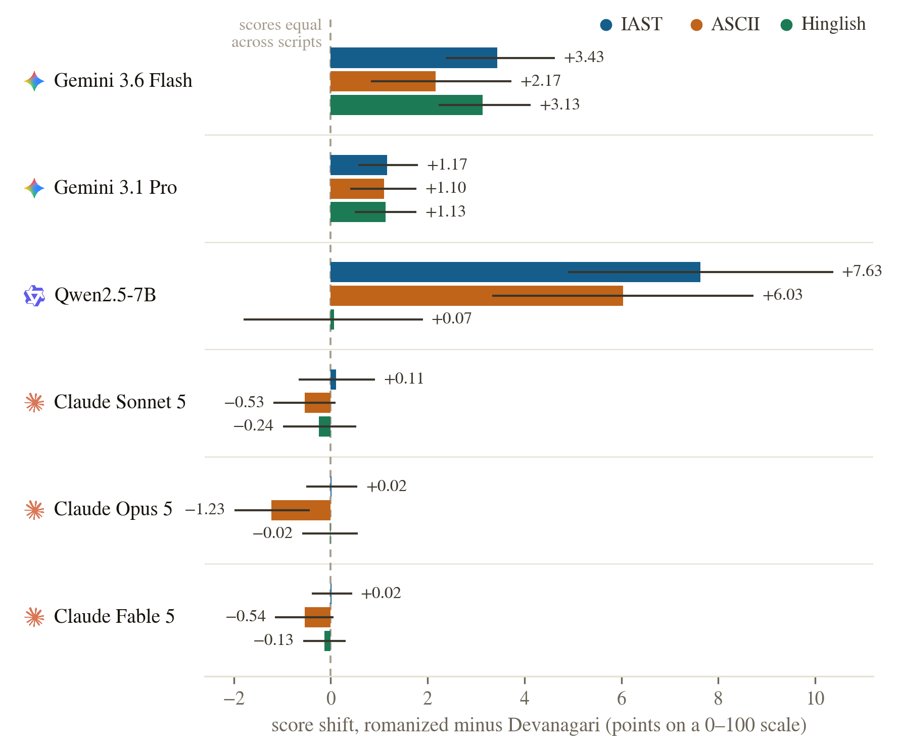
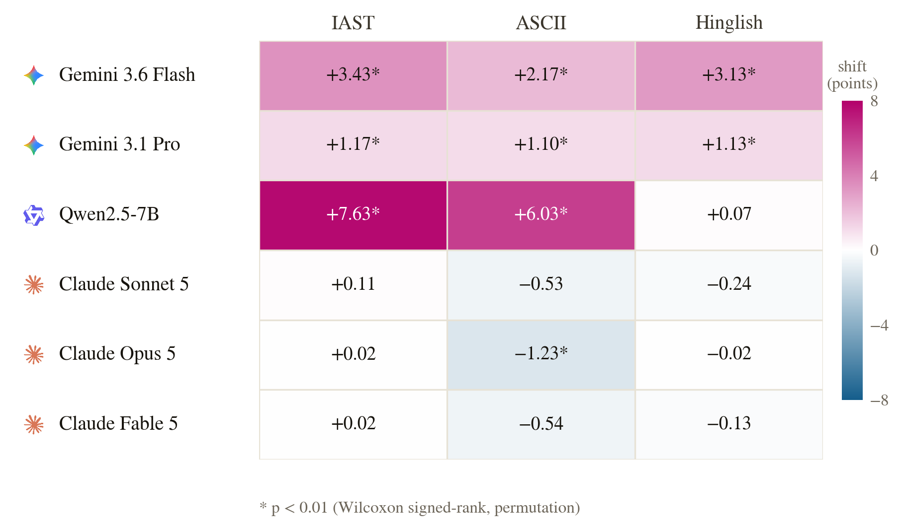
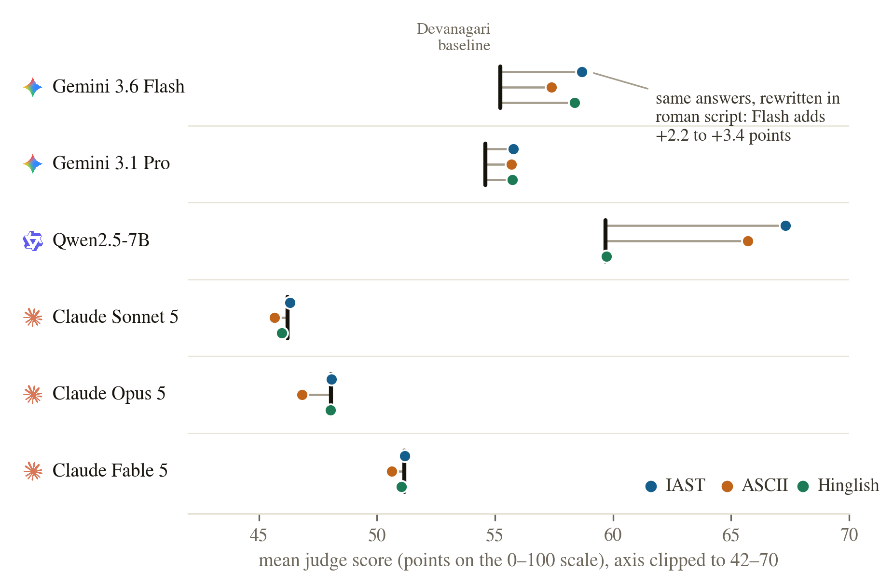
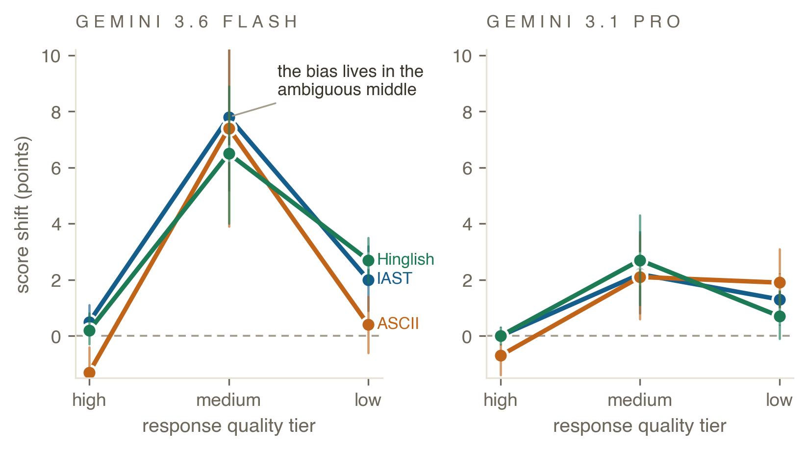
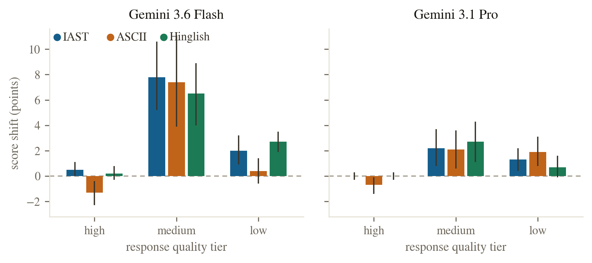
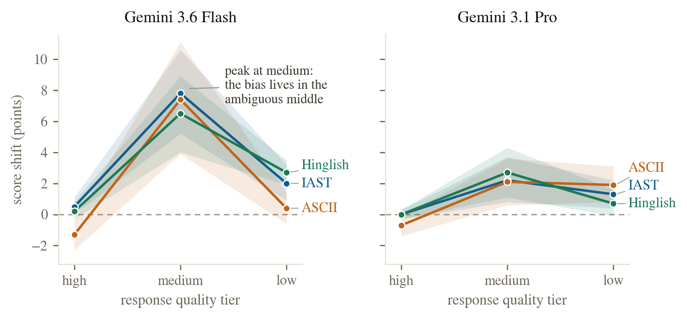
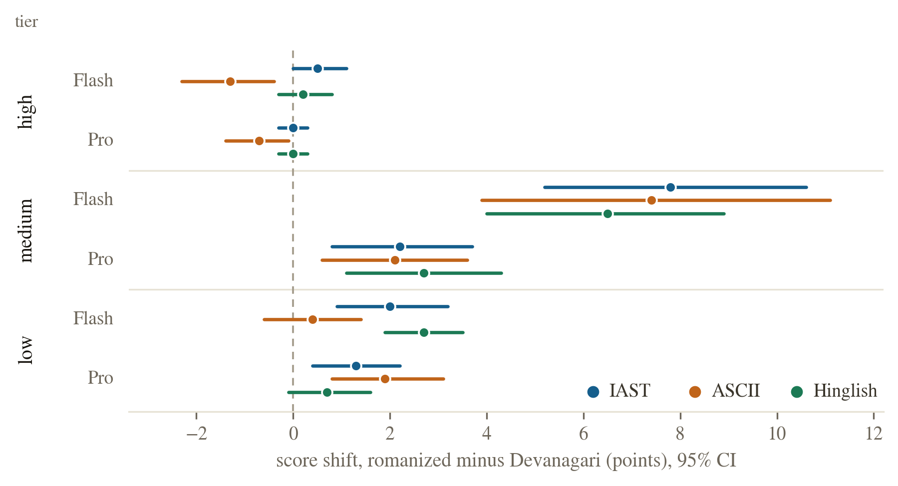

fig2_forest.png — A (current). Forest plot: mean shift with 95% CI per judge and condition.Variant A is the current version in the paper. B–D are alternatives; nothing in the paper has been changed. All variants are drawn from results/analysis.json at 300 dpi, 6.3 in wide.
fig2_forest.png — A (current). Forest plot: mean shift with 95% CI per judge and condition.
fig2B_bars.png — B. Grouped horizontal bars with CI whiskers, judge logos, and shift values labeled at the bar ends. Emphasizes magnitude comparison within each judge.
fig2C_heatmap.png — C. Judge × condition matrix; diverging color around zero (blue = deflation, magenta = inflation), asterisk marks p < 0.01. Most compact; reads as a summary table.
fig2D_dumbbell.png — D. Dumbbell on the absolute 0–100 score axis (clipped to 42–70): black tick = Devanagari baseline, dots = the same answers rescored in each roman condition. Shows the inflation as literal displacement.
fig3_tiers.png — A (current). Thick point-line per condition across tiers, CI whiskers.
fig3B_bars.png — B. Grouped vertical bars by tier × condition with CI whiskers, two panels. Conventional; makes the medium-tier spike read as height.
fig3C_slope.png — C. Thin slope lines with shaded 95% CI bands and direct end labels; annotation on the Flash medium-tier peak. Quieter than A; bands show CI overlap.
fig3D_dot.png — D. Single-panel dot-range: rows are tier × judge (Flash/Pro interleaved), horizontal 95% CI segments colored by condition. Puts Flash and Pro on one shared axis.